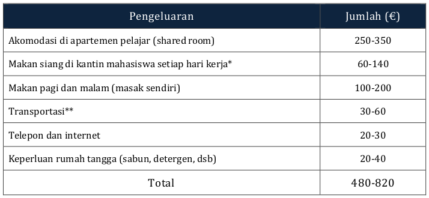

Tap pertanyaannya untuk membuka atau menutup jawaban
Kualitas pendidikan. Berdasarkan Global Competitiveness Report 2016, Finlandia merupakan negara dengan pendidikan tinggi dan training terbaik di Eropa. Finlandia merupakan negara yang sangat memperhatikan pendidikan. Anggaran pemerintah untuk pendidikan cukup tinggi sehingga mendorong kualitas pendidikan, riset, dan penelitian. Kualitas pendidikan juga sangat terjamin karena diawasi ketat oleh pemerintah melalui Lembaga FINEEC.
Program internasional yang beragam. Finlandia memiliki banyak program yang ditawarkan dalam Bahasa Inggris. Mahasiswa yang belajar di Finlandia pun datang dari berbagai negara sehingga lingkungan belajar pun umumnya internasional.
Suasana yang mendukung untuk belajar. Finlandia merupakan negara yang damai dan suasanyanya tentram. Lingkungannya sangat kondusif untuk belajar.
Keamanan. Finlandia dikenal sebagai negara yang sangat aman. Berdasarkan World Economic Forum, Finlandia merupakan negara paling aman di dunia.
Biaya pendidikan gratis: Semua program berbahasa lokal (Finnish atau Swedish) ditawarkan secara gratis (baik untuk mahasiswa lokal maupun mahasiswa internasional diluar EU/EEA). Mahasiswa hanya diharuskan membayar student union fee, berkisar antara 50-100 euro per semester. Mahasiswa tingkat doktoral (baik program berbahasa lokal maupun bahasa Inggris) juga tidak dikenakan biaya pendidikan.
Beasiswa dari Universitas (tuition fee): Mahasiswa non-EU/EEA (program sarjana dan master) yang berkuliah dalam program berbahasa Inggirs (mulai tahun 2017) dikenakan biaya pendidikan yang berkisar antara 8.000–15.000 euro per tahun. Namun, pemerintah mewajibkan setiap universitas untuk menyediakan program beasiswa untuk mahasiswa non-EU/EEA. Terdapat universitas yang menyediakan beasiswa penuh, ada pula universitas yang hanya menawarkan beasiswa parsial. Pendaftaran beasiswa ini umumnya dilakukan bersamaan dengan pendaftaran atau setelah penerimaan (atas tawaran dari universitas). Beasiswa dari universitas umumnya tidak mencakup biaya hidup.
Beasiswa dari lembaga eksternal (biaya hidup). Walaupun tidak banyak, terdapat beberapa lembaga eksternal yang memberikan beasiswa. Umumnya info ini disalurkan melalui universitas.
Beasiswa untuk program Doktoral. Tersedia beasiswa dari CIMO/EDUFI untuk pelajar program doktoral. Beasiswa mencakup biaya hidup sebesar 1500 euro per bulan.
Erasmus Mundus. Terdapat beberapa program Erasmus Mundus di Finlandia yang dengan beasiswa mencakup biaya hidup dan biaya perjalanan.
Mahasiswa student exchange dari universitas partner tidak dikenakan biaya pendidikan. Terdapat beberapa short course/summer course yang diselenggarakan oleh universitas, namun program ini merupakan program berbayar (kecuali program dalam bahasa lokal)
IT and Game Development: IT menjadi salah satu jurusan favorit di Finlandia karena Finlandia merupakan salah satu pelopor pengembang teknologi informasi. Salah satu kontribusi Finlandia di bidang IT adalah Linux Krenel yang dikembangkan di University of Helsinki. Selain itu, IT juga digemari karena kuatnya start-up culture di Finlandia dan banyaknya industri game Finlandia ternama di dunia.
Pendidikan: Finlandia terkenal dengFan negara yang paling inovatif dalam bidang pendidikan. Berdasarkan PISA beberapa tahun terakhir, Finlandiaia merupakan salah satu negara yang memiliki Pendidikan dasar terbaik. Di Finlandia, pengajar/guru merupakan profesi yang paling dihormati dan profesi favorit. Oleh karena itu, kompetisi untuk masuk ke sekolah guru sangat tinggi.
Environment technology and innovation: Finlandia merupakan negara yang sangat peduli terhadap lingkungan. Perpaduan antara kecanggihan teknologi dan kepedulian terhadap lingkungan melahirkan banyak inovasi di bidang teknologi lingkungan dan menjadikan bidang ini cukup populer.
Architecture, art and design: Bidang ini juga merupakan bidang favorit karna keistimewaan Finlandia sebagai salah satu pusat arsitektur modern dan disain, tertutama banyak dikenal dengan Scandinavian design yang diantaranya adalah mabel, peralatan makan, design dengan kaca (glass art and glassware) dan lain sebagainya.
Secara umum tidak ada keharusan untuk memiliki ilmu linear dari yang diambil sebelumnya. Tetapi, tentu setiap program memiliki kriteria spesifik sesuai bidang ilmu dan latar pendidikan yang dibutuhkan dalam program tersebut.
Sarjana dan Master
Pendaftaran pendidikan tingkat tinggi dilakukan secara terpusat. Pendaftaran online melalui situs www.studyinfo.fi: sekitar Desember-Januari (calon mahasiswa dapat memilih hingga 6 program dalam 1 aplikasi). Kirim berkas lewat post. Ujian. Beberapa program (untuk tingkat sarjana) menggunakan sistem ujian. Ujian diselenggarakan secara global. Lokasi ujian terdekat dengan Indonesia adalah di Vietnam. Video interview. Video interview biasanya dilakukan sekitar bulan Februari untuk program tertentu (terutama tingkat master). Letter of acceptance: Maret-April Konfirmasi kedatangan dan registrasi Pembayaran student union Pengajuan aplikasi residence permit dan akomodasiPhD/Doktoral
Pendaftaran pendidikan tingkat tinggi dilakukan secara terpusat. Pendaftaran online melalui situs www.studyinfo.fi: sekitar Desember-Januari (calon mahasiswa dapat memilih hingga 6 program dalam 1 aplikasi). Kirim berkas lewat post. Ujian. Beberapa program (untuk tingkat sarjana) menggunakan sistem ujian. Ujian diselenggarakan secara global. Lokasi ujian terdekat dengan Indonesia adalah di Vietnam. Video interview. Video interview biasanya dilakukan sekitar bulan Februari untuk program tertentu (terutama tingkat master). Letter of acceptance: Maret-April Konfirmasi kedatangan dan registrasi Pembayaran student union Pengajuan aplikasi residence permit dan akomodasiPeriode Pendaftaran: November-Januari
Autumn semester: September-December (2 periode)
Spring semester: Januari-Mei/Juni (3 periode)
Libur musim panas: Juni-Augustus
Di Finlandia, tahun akademis dimulai dari Autumn Semester. Biasayanya pendaftaran dibuka sejak November tahun sebelumnya hingga Januari tahun akademik dimulai. 1 Tahun akademik terdiri dari 5 periode. Autumn Semester umumnya adalah pada bulan September-Desember dan terdiri dari 2 periode, sedangkan Spring Semester umumnya dimulai pada bulan Januari hingga akhir Mei/awal Juni, terdiri dari 3 periode. Libur formal hanya terdapat pada akhir semester. Terdapat kelas yang dijadwalkan selesai dalam 1 periode, namun ada pula kelas yang berlangsung selama 2 periode. Periode 5 biasanya tidak diperuntukkan bagi mahasiswa exchange.
Bahasa lokal tidak begitu penting untuk pelajar yang belajar di kelas internasional karena umumnya mereka berada di lingkungan internasional. Masyarakat terutama di kota besar mayoritas bisa berbahasa Inggris. Bahasa lokal menjadi sangat penting jika pelajar ingin bekerja di Finlandia. Untuk bekerja, biasanya dibutuhkan sertifikasi bahasa Finlandia atau kemampuan bahasa Swedia (hanya di beberapa kota yang bahasa utamanya Swedia).
Berdasarkan situs resmi Study in Finlandia, biaya hidup pelajar berkisar antara 700-900 euro per bulan. Namun, angka ini sangat relatif, berdasarkan gaya hidup masing-masing individu dan besarnya kota tempat tinggal. Berikut kisaran pengeluaran utama:

Biaya diatas belum termasuk biaya kegiatan sosial/hiburan dan olah raga. Biaya inilah yang biasanya sangat bergantung pada gaya hidup dan bisa membuat angka pengeluaran tiap orang sangat beragam.
* Harga paket makan di kantin mahasiswa (program sarjana dan master) adalah 2.40-2.80 euro, termasuk salad, roti, dan minuman, sedangkan untuk mahasiswa program doktoral harga paket makan berkisar antara 4.5-7 euro.
** Di kota-kota tertentu pelajar tidak perlu mengeluarkan biaya transportasi karena perjalanan sehari-hari dapat ditempuh dengan berjalan kaki atau bersepeda.
Sosial
Bahasa Inggris (lisan) dapat digunakan di tempat umum, terutama di kota-kota besar. Umumnya terdapat pelayanan dalam bahasa Inggris untuk public services. Namun, informasi dan petunjuk hanya ditulis dalam bahasa Finnish atau Swedish. Masyarakat Finlandia cenderung pendiam dan individualis. Kebanyakan dari mereka tidak berinteraksi dengan orang yang tidak dikenal. Mereka juga sangat menghargai personal space, sehingga mereka biasanya lebih nyaman duduk sendiri atau berada di tempat yang tidak terlalu ramai. Umumnya masyarakat saling menyapa secara informal. (Misalnya: memanggil dosen menggunakan nama panggilan).Agama
Kegiatan keagamaan di Finland sangat terorganisir dan seluruh organisasi keagamaan/rumah ibadah tercatat oleh pemerintah. Agama mayoritas di Finlandia adalah Kristen Lutheran, namun terdapat pula beberapa gereja Katolik yang tersebar di beberapa kota. Tidak banyak tempat beribadah untuk orang Islam. Di Helsinki tersebar beberapa masjid/mushola, tetapi di kota-kota lain tidak banyak. Beberapa universitas memiliki ruang khusus yang dapat digunakan untuk beribadah. Puasa tahun 2018 akan bertepatan di musim panas, sehingga harus berpuasa selama 20-22 jam, tergantung lokasi kota. Sulit mencari daging halal, tetapi makanan (di supermarket atau restoran) informasi mengenai bahan yang digunakan selalu dicantumkan. Banyak pilihan makanan untuk vegetarian dan vegan. Di kota-kota tertentu terdapat toko yang menjual produk-produk halal.Pelajar diperbolehkan bekerja selama 25 jam per minggu saat semester akademik berlangsung, sedangan saat libur musim panas dan natal pelajar boleh bekera full-time. Tetapi, mencari pekerjaan di Finland tidak mudah dan banyak yang membutuhkan kemampuan berbahasa Finnish. Biasanya pelajar dengan kemampuan bahasa terbatas hanya bekerja fisik (cuci piring, cleaner di hotel/restoran).
Diskon pelajar: transportasi (dalam dan antar kota), makanan di kantin pelajar, program diskon pelajar (toko yang bekerjasama dengan Frank)
Kesehatan: student health service (NB: Saat mengajukan aplikasi residence permit, mahasiswa tetap wajib memiliki asuransi kesehatan pribadi)
Lembaga penyedia beasiswa tidak banyak, terutama untuk beasiswa yang mencakup biaya hidup.
Umumnya info beasiswa disebarkan oleh universitas dan tidak diiklankan secara luas. Beberapa universitas menawarkan beasiswa setelah proses penerimaan mahasiswa selesai (setelah mahasiswa resmi diterima). Disarankan untuk memperhatikan situs universitas atau menghubungi international office universitas untuk informasi lebih lanjut.
Jika tidak mendapatkan beasiswa biaya hidup, tidak disarankan untuk bergantung pada part-time job saja, terutama bagi yang tidak mempunyai keahlian bahasa lokal.